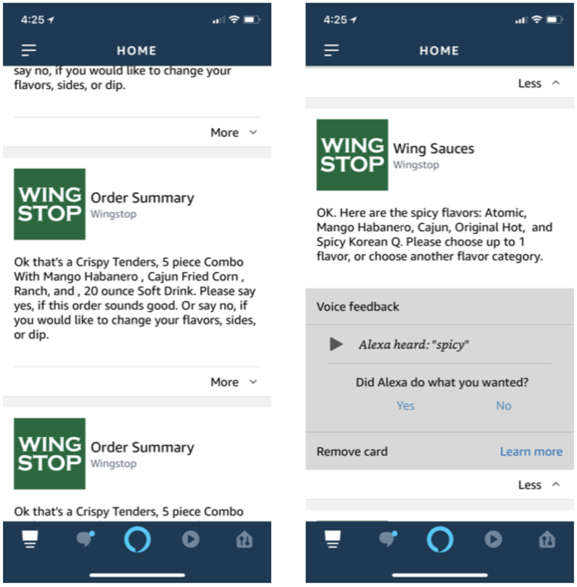
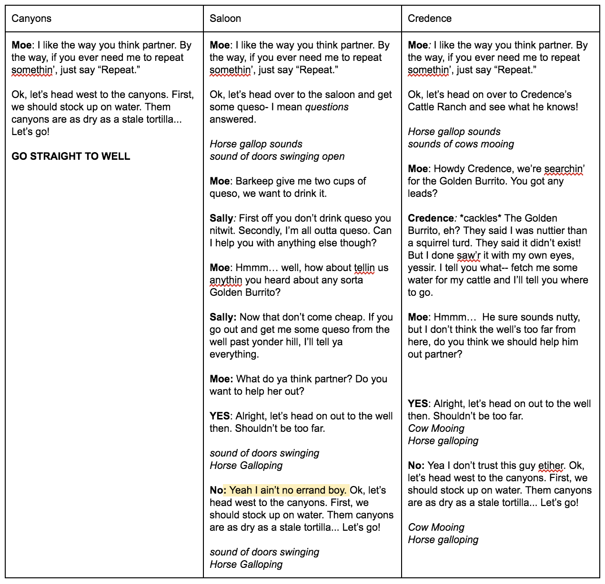

Download Keynote presentation to hear audio
Overview
The Problem
As a part of our class, representatives from Moe's Southwest Grill came to us with a prompt: figure out a way to best implement voice interaction into the context of Moe's Southwest Grill. Since this was a very open-ended problem because of the facets of voice interaction that exist, our team had to find ways in which voice interaction would be useful to Moe's in a variety of contexts.
The Solution
Our team came up with Burrito Quest: a voice interaction storytelling game that is played on a device such as an Amazon Echo. This entertainment medium not only provides an interesting story, but also provides rewards points and the opportunitiy to win a free burrito upon completion of the game. This game would inspire interesting PR for Moe's because of this fun use of voice interaction technologies, as well as provide customers with great benefits.
My Roles
• Created task analysis and summaries of popular Alexa Skills for competitive analysis
• Created and distrubuted survey
• Helped with concept creation and fruition
• Primary notetaker for feedback sessions
My Team
• Me
• Bang Tran
• Rachel Feinberg
• Suyash Thakare
Methods Used
• Survey for Moe's Customers
• Competitive Analysis
• Empathy Maps
• Pivot!!
• Follow-Up Survey from Pivot
• Concept Creation
• Feedback Session 1: Choosing a Concept
• Feedback Session 2: Improving Chosen Concept
Research Process
Survey for Moe's Customers
We took our background research on what we understood about Moe's Southwest Grill from our partnered clients, and conducted a survey to understand more about what customers enjoy or dislike about the Moe's dining exprience, as well as opinions and usage on voice interaction technologies and online food ordering experiences. We split these two ideas (online food ordering experiences and voice technology opinions) into 2 seperate surveys that we sent to 2 different sets of equal customers, since there was a lot of data we wanted to collect, and we did not want our participants to exprience survey fatigue.
14Participants for Moe's Exp + Voice Survey
12Participants for Moe's Exp + Online Ordering Survey
Takeaways
For Moe's Experiences:
• Customers really like the ease, efficiency, customization, and visibility in the Moe's in-store ordering exprerience.
• Customers really dislike the long wait time and ordering difficulties in the Moe's in-store ordering experience.
• Customers really like how easy the Moe's app is to use, and enjoy the rewards points they can obtain through the app.
• Customers dislike the unreliability and interface difficulties they can have on the Moe's app.
For Voice Technologies:
• Most people found voice technologies more complicated and inconvenient to use than normal touch interfaces.
• Most people used voice technologies in their home or car, and were mostly alone or with family and friends.
• Most people used voice technologies for phone calls, text messaging, music, searching, timers, and weather.
Competitive Analysis
Taking our survey results, we decided to delve into the realm of Alexa Skills and popular voice ordering technologies in order to understand what works for these technologies and how our team could gain a better understanding on how Moe's can fit into voice technologies. We also conducted task analyses on some of these systems to help better understand how they worked.
Domino's "Dom" Mobile Voice Ordering Assistant

Wingstop Voice Ordering Alexa Skill
Starbucks Voice Ordering Alexa Skill + App

Magic Door Alexa Skill

Ambient Sounds: Thunderstorm Sounds Alexa Skill

Jeopardy! Alexa Skill

Takeaways from Competitive Analysis
• Voice interaction technologies can be extremely complex or extremely simple
• Voice interaction does not have to be disembodied—it can be grounded with visuals
• Voice interaction can be fun and interactive in novel ways
• Chunking information in voice interaction technology can save time
• Linking voice technology to an existing account solves some logistical issues like payment and addresses
• Offering very important features upon start-up can help users be aware of what’s possible
• Use familiar attributes can help users better familiarize themselves even when using a new technology
Empathy Map
Taking our survey results, we also created empathy maps to understand two different types of groups: Moe's customers and voice interaction users.
Moe's Customers
Voice Interaction Users

Pivot!!
After discussing the results from our competitive analysis, we realized that there was a fundamental issue with the way we were approaching this problem. Currently, we had been approaching the problem from a "top-down" approach, that is, figuring out how Moe's can fit into voice. After lots of discussion, we knew that Moe's could really only fit into voice through only a few means - including food and ordering. Based off of our research, we knew that voice ordering was not very well received, so we were stumped on other ways that Moe's could fit into voice.
After this discussion, we decided on a better approach. It made it easier for our team to think of design ideas based off of our research if we looked at it from a "bottom-up" approach, that is, figuring out ways that voice can fit into Moe's. This mentality freed ourselves to think outside of the box on the ways that popular voice technology ideas can be incorporated into the Moe's brand.
How could Moe's fit into voice interactions?
How could voice interactions fit into Moe's?
From this point forward, we fixated our research on this new approach, which would help us to more freely think about the problem and come up with solutions.
Follow-up Survey from Pivot
After our pivot, we decided to conduct another survey to ask more about the "Why" behind voice interaction, instead of focusing our energy on Moe's experiences and food ordering. We had 103 participants for this survey.
Findings
What's your favorite thing that you use voice technology for?

Think about the last time you used a voice technology. Where were you when you used it?
Is there anything else you would like to add about why you use voice interaction technology?

Takeaways
• Our voice technology needs to be simple. This is because participants most often use voice technologies for simple tasks, such as playing music, checking the weather, asking questions, calling and texting, asking for directions, and setting an alarm
• Our interactions do not necessarily need to be private, since participants use voice technologies both alone and with people
• Convenience and entertainment are two key reasons why our participants used voice technologies, so catering our design concepts around these ideas would be best
Design Process
Concept Creation
We designed 3 concepts in order to conduct feedback sessions for which concept potential users would like best.
Concept 1: Moe's Voice Ordering

Concept 2: Moe's Trivia

Concept 3: Moe's Burrito Quest
Feedback Session 1: Choosing a Concept
In this feedback session, we ran through the three concepts with our participants using a script interaction involving one of our team members as "Alexa" and the participant as the user, using the scripts and pictures found above. Here are our results.
4Participants
3Concepts


Moe's Voice Ordering
Impressions
• Could relate to online ordering
• Not sure when using voice for ordering could be useful over traditional ordering
Likes
• Simulation of the Moe’s in-store experience
• Visual component allows food ordering without voice interaction
Dislikes
• Voice interaction makes the process of ordering online tougher
• Listening to a lot of unnecessary steps sometimes
Changes
• Personalizing the experience
• Flexibility in navigation
Moe's Trivia
Impressions
• Enjoyed the experience, particularly the musical components
• Percentile system was confusing
Likes
• Earning reward points
• “Corniness” and strong connection to brand makes it more fun
Dislikes
• Confusing percentile system
•Need to own an Alexa-enabled device to play the game
Changes
• Using a ranking system instead of the percentile system
• Include an integration with the Moe’s mobile app
Moe's Burrito Quest
Impressions
• Fun to engage in (lots of smiling/laughing during the session)
Likes
• Defining your own path in the story
• The minigame component of the story
Dislikes
• Length of script in between interactions - lost engagement
• Increased cognitive load due to the absence of a visual interface
Changes
• Remove Moe’s daily deals at the beginning of the interaction
• Break up the script into smaller, more digestible parts
And the final concept chosen by our participants was...
Burrito Quest!
Feedback Session 2: Improving Chosen Concept
In this stage, we fleshed out the Burrito Quest concept some more in order to test the overall concept with participants.
4Participants
2New Participants
2Participants from Previous Session
We conduted a Wizard of Oz scenario using a voice-recorded script and an audio puck simulating an Alexa Echo. The participant interacted with the puck as if it was an Alexa, and the "wizard" controlled which audio recordings (based off of the prototype at the top of this page) were played based on the participant's words.
Portion of the script
Audio puck

We used this general outline for the script. With this outline, it gives an "illusion of choice" for the interaction, allowing us to simplify our prototype while also demonstrating freedom of choice for the participants interacting with our system.
Results
Observations During Concept Enactment
• Overall participants were able to successfully interact with the concept
• Participants laughed/smiled while listening to dialogue
Impressions
• Generally well received and enjoyed
• Some feedback indicated there was too much narration
Likes and Dislikes
• Likes: Liked the presentation of the concept, particularly in terms of story and sound
• Dislikes: Primarily disliked the length of the narration and low frequency of user interaction
Understanding of Story and Interactions
• Story: Story flow and progress made sense to participants
• Interaction: Participants were able to understand what input was required for each interaction
Engagement
• Generally easy to stay engaged with concept, though this could have been hindered by the infrequent interactions
Improvement of Storytelling Experience
• Only received feedback from one participant: increase frequency of interaction, integrate visual component, revise points system
Shootout and Minigames
• Shootout: Generally well-received, added an exciting element to the concept; some felt that the music lasted a little too long and could be shortened
• Minigames: The concept of minigames was well-liked; liked earning points and how they could fit in with the story
Points System
• Liked the ability to earn points, but there was confusion about how they worked and how they were presented
Usability Testing
Usability Testing
Since this is an ongoing project, we are currently in the usability stage. This section will be updated once our results are completed.